From CAD to working hardware
I take a design through analysis, fabrication drawings and the build, and stay with it through testing.
Capstone robot, ROBOCON, Trigon washdown system
Mechanical engineer. I design robots and machines, build them, and work on the control that makes them move well.
Finishing my M.Eng at the University of Victoria. Looking for full-time roles in robotics, controls and mechanical design, in Vancouver or anywhere in Canada.
Most teams I'd join need one of these. Each is backed by a project or a job further down the page.
I take a design through analysis, fabrication drawings and the build, and stay with it through testing.
Capstone robot, ROBOCON, Trigon washdown system
Sizing pumps, motors, valves and heat exchangers from pressure, flow and head-loss calculations, and drawing the circuits.
Bosch Rexroth, capstone spray system
Trajectory optimization and MPC for robot arms, written from first principles, plus embedded C on real rigs.
Master's thesis, adaptive MPC, conveyor cell
Machines I've built first, then research. For each one I say what my part was, what the team did, and what came out of it.
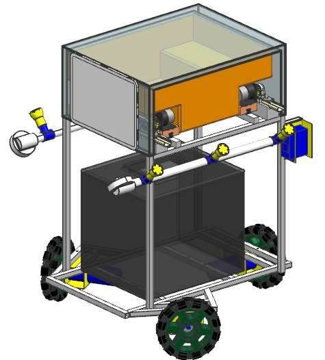
Designed, built and demonstrated. Mechanical design lead.
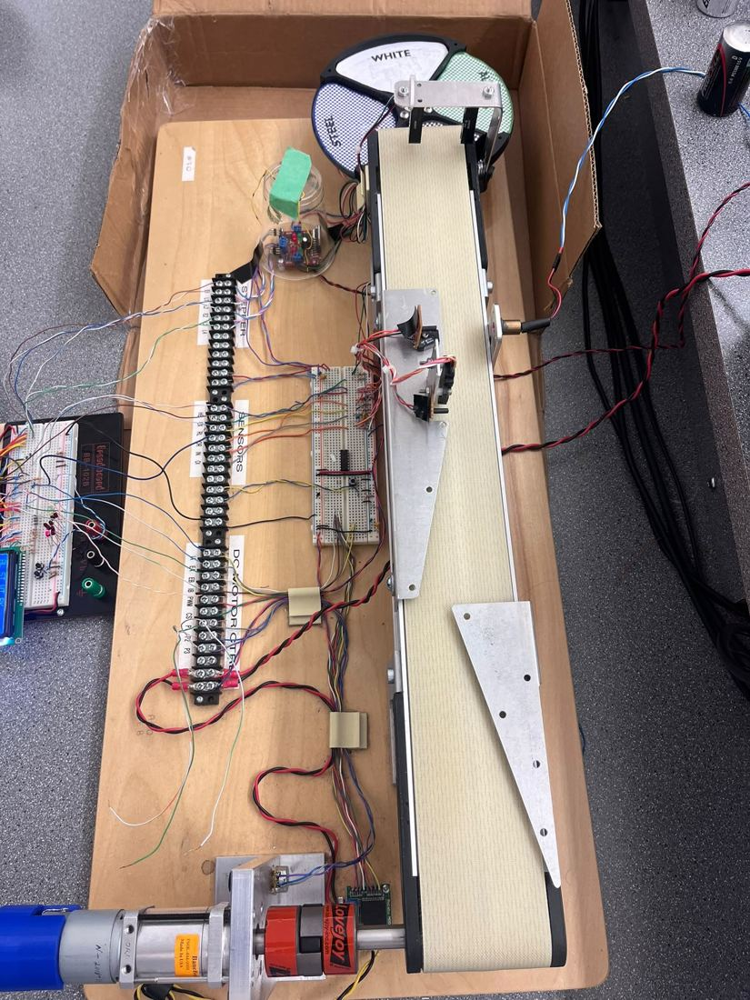
48 parts sorted in 35 seconds with no errors
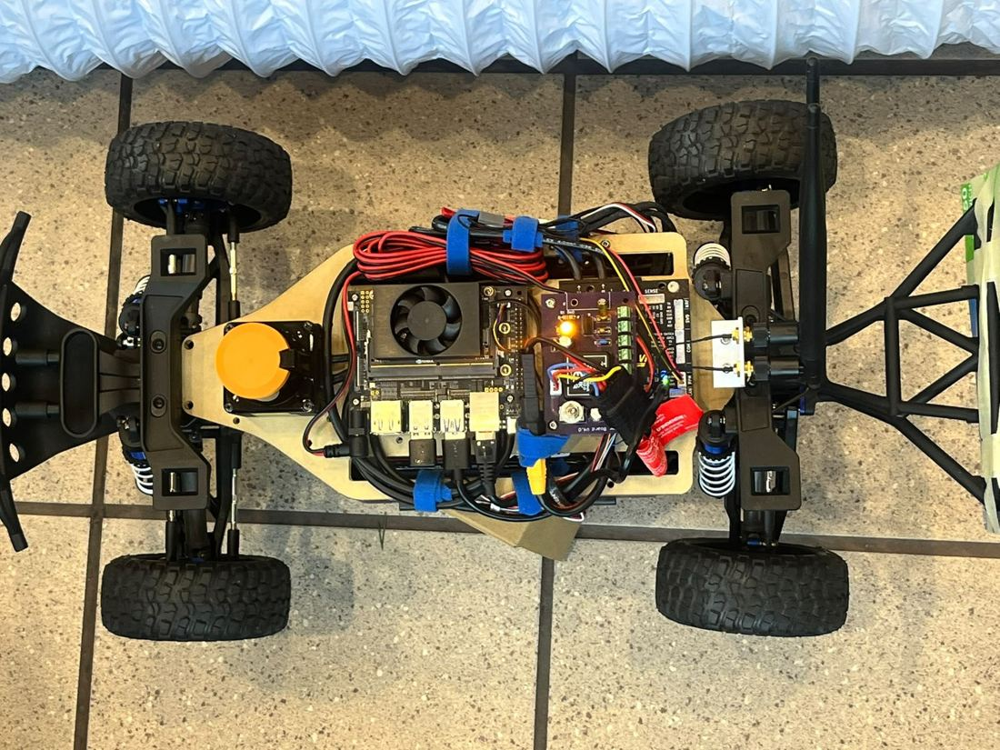
Team won the 2024 AI Velocity Cup
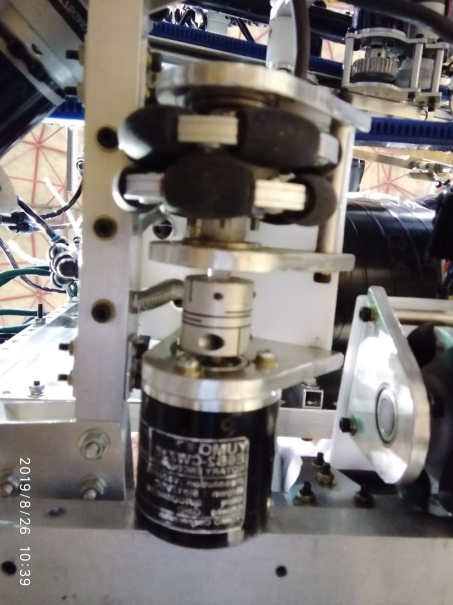
National winners in 2019, competed in Mongolia
Constrained motion planning for a 7-DOF arm
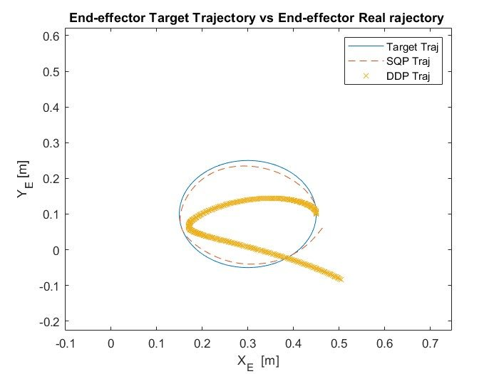
Two solvers written by hand and compared
B.Eng capstone, 2020 to 2021
A remote-controlled robot that disinfects surfaces and delivers medication, so healthcare workers don't have to walk into a COVID ward for routine tasks.
There isn't room to turn a robot around beside a hospital bed, so I used a three-wheel holonomic drive that can move in any direction. I worked out its inverse kinematics with the wheels at 90°, 210° and 330°, and wrote a MATLAB class that converts a body velocity into wheel speeds and back.
For the motors I took a 24 kg robot with a safety factor and a rolling friction coefficient of 0.26, which needs 14.98 kg·cm at each wheel. I picked 12 V planetary geared motors with 22 kg·cm stall torque and 150 mm omni wheels.
I ran NX Nastran on the base under a 500 N load for Al 6061, SS 220 and SS 410. All three were stiff enough, so we chose SS 220 because it was cheaper and easier to get, and welded the base from stainless square pipe on a fixture.
Sanitizer comes from a 15 litre tank. A 12 V diaphragm pump (9 LPM, 150 psi cut-off) feeds six flat fan nozzles through a solenoid-operated pressure control valve, a flow control valve, a flow meter, a filter and a gauge, so the spray can be adjusted instead of running flat out. The nozzles sit on a servo-turned shaft so the spray angle can change.
An Arduino Uno with L293D drivers runs the motors. A Raspberry Pi 3B streams the camera over Wi-Fi, and the robot is driven from a desktop or phone app. The delivery module uses two servo-driven rack and pinion sets on a linear guide.
What I'd do differently: plan the packaging earlier. The tank, pump, delivery rack and drivetrain all competed for the same space and the same centre of gravity, and that took more rework than any single subsystem.
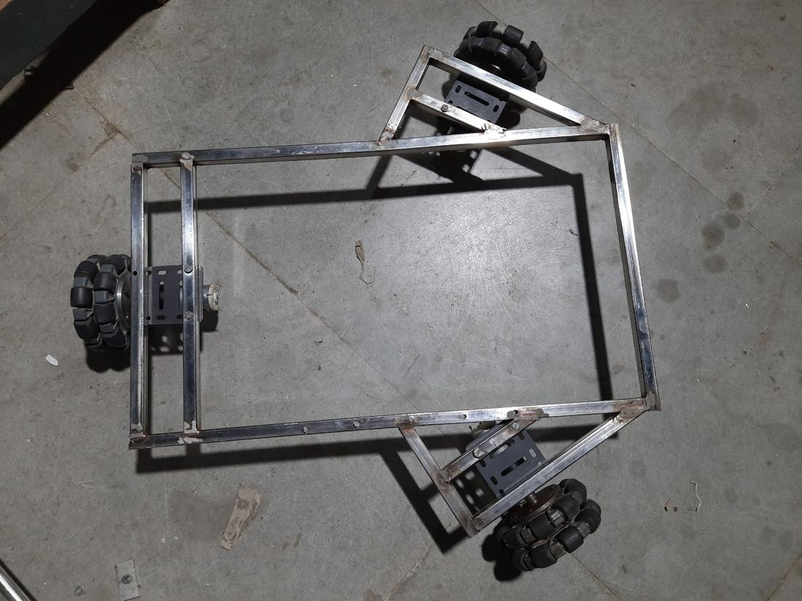
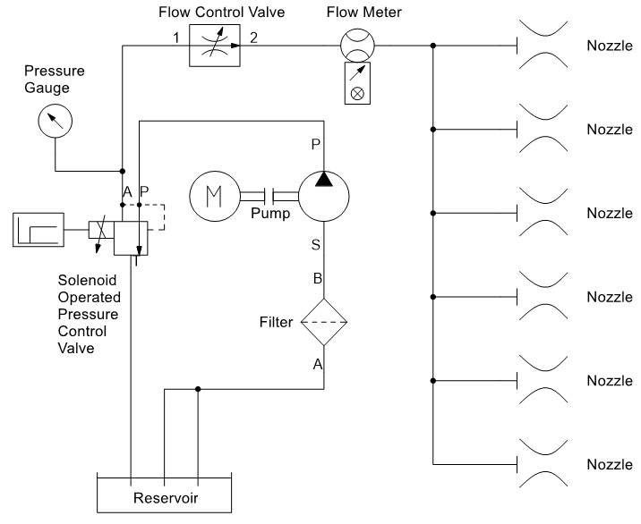
MECH 458/554 Mechatronics, UVic, April 2023
Identify steel, aluminium, white plastic and black plastic parts as they ride down a conveyor, and drop each one into the right bin.
Parts are sensed well before they reach the sorter, so the system has to remember what each part is while it is still on the belt. Optical, reflectivity and Hall effect sensors form three stations. A DC motor under PWM runs the belt, a stepper turns the sorting bucket, and two push buttons pause the cell and ramp it down.
The reflectivity sensor is read with interrupt-driven ADC sampling. Each classified part goes into a linked list used as a FIFO queue, which tells the stepper what to do as each part reaches the end of the belt. The stepper first ran a linear ramp, lost steps and never reached the speed we needed, so I changed it to an S-curve acceleration profile.
48 parts sorted in 35 seconds, no errorsSystem performance index of 1.37, against a pass mark of 0.8
What I learned: faults that looked like wrong classifications were really queue and timing errors. The only way to tell them apart was to make the firmware report what it believed was happening, and I now build that kind of instrumentation in early.
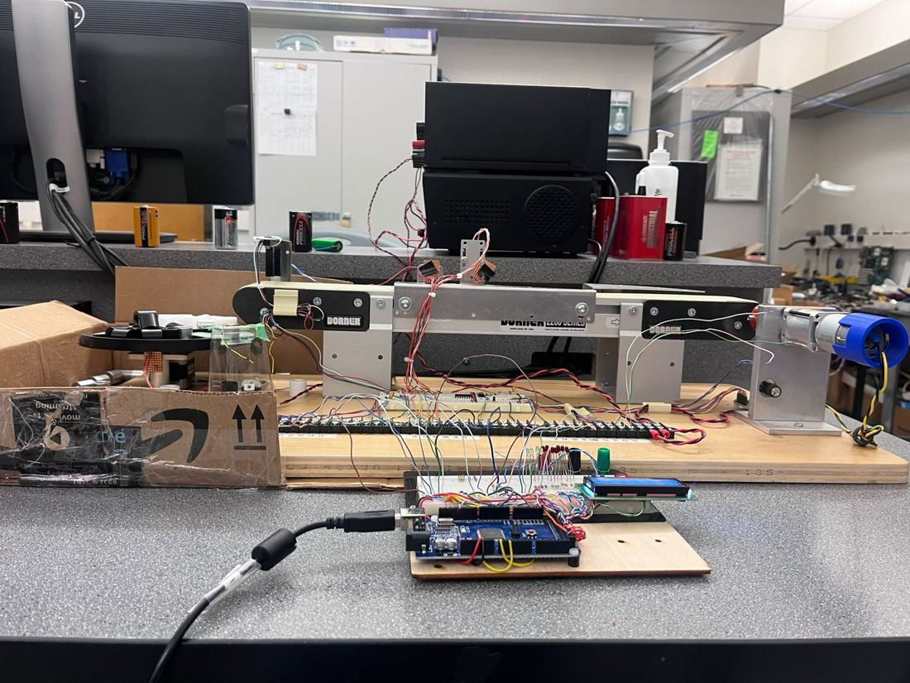
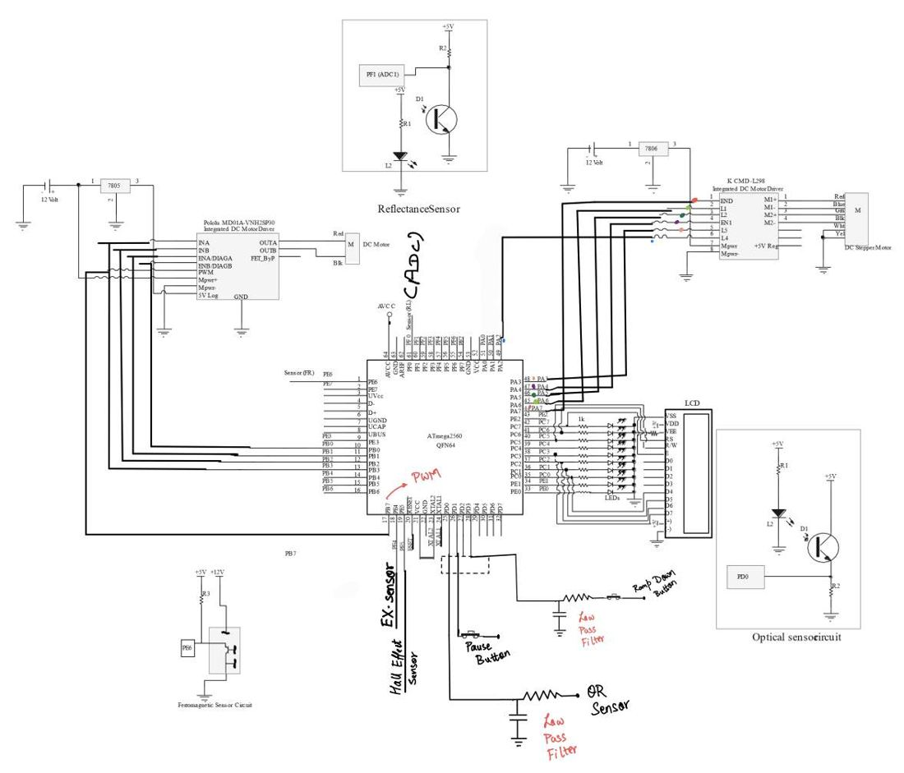
UVic CAV Racing Team, May to September 2024
A 1/10 scale autonomous car running ROS 2 on an NVIDIA Jetson, raced at the IEEE Victoria Section AI Velocity Cup.
I helped assemble the chassis and integrate its actuators, sensors and controllers. I did wiring and sensor mounting, set up the Jetson, and tuned the PID controller on the car.
Most of my time went into the gap between the simulator and the track. Sensor noise and latency that the simulation didn't model meant code that worked in simulation failed on the car, and closing that gap is what made us competitive.
Champion Award, 2024 AI Velocity CupPlus the Technical Excellence and Best Team Collaboration awards. All three went to the team.
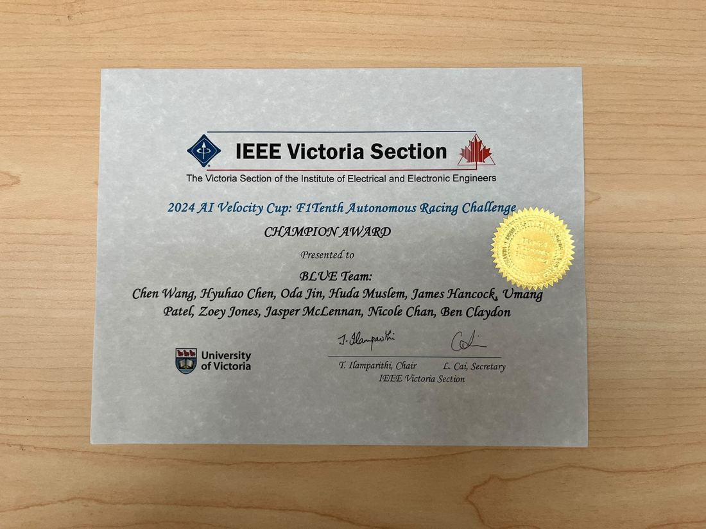
ROBOCON LDCE, 2018 to 2020
Three seasons designing and building robots for the ABU Asia-Pacific Robot Contest, to fixed rules and fixed deadlines.
I designed and built holonomic and vector drive robots on three- and four-wheel omni layouts, with DC motors, pneumatic circuits and aluminium frames. For competition tasks I built a kicking mechanism using springs, pneumatics and an electromagnet, and a throwing mechanism using pneumatics and DC motors. I 3D printed custom motor mounts and pneumatic fixtures, and later coached junior members.
Odometry is only as good as the contact between the encoder wheel and the floor. I designed a spring-loaded mount that keeps the encoder wheel pressed against the ground through a pivot, so it stays in contact over uneven surfaces. It's a small part, but it decided whether the robot knew where it was.
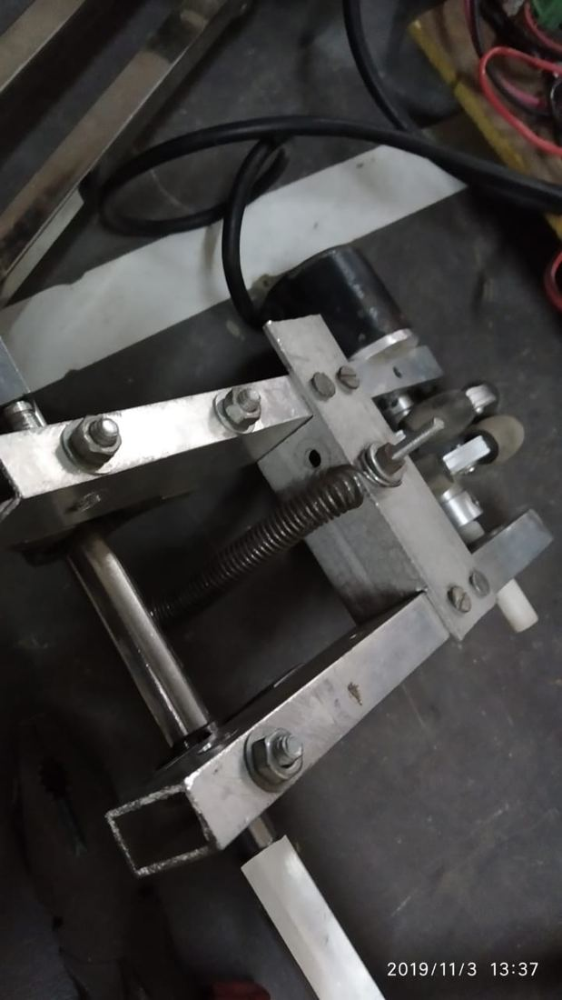
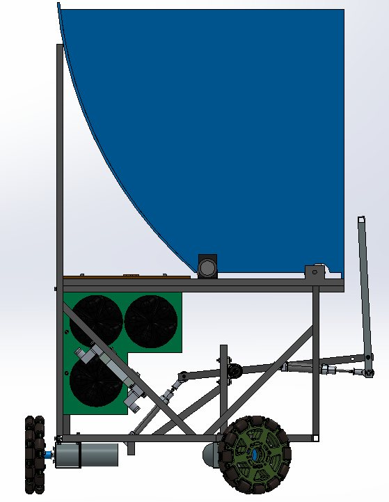
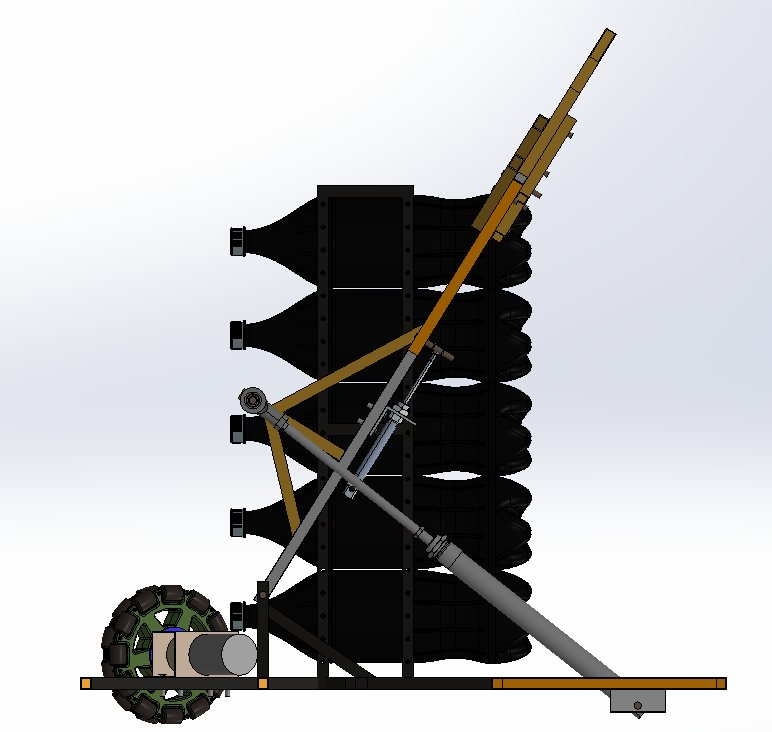
Master's research, UVic
Planning motions for robot arms that keep them away from awkward, poorly conditioned poses while still respecting hard limits.
Near a singular pose a robot arm loses the ability to move or push in some directions. Staying well conditioned is a preference, while joint, velocity, torque and obstacle limits are not, and balancing the two is the hard part.
I implemented a primal-dual augmented Lagrangian DDP solver from first principles rather than calling an optimization library. Later versions reduce the KKT system with a Schur complement to handle ill-conditioning, and a variable time-step extension refines the discretization where the arm gets close to singular.
Much of the work was diagnostic. I built logging, plotting and comparison tools to test solver versions across large batches of runs, so I could tell whether a change came from the formulation, the numerics or a bug. One gravity compensation error only showed up in certain joint configurations and was invisible in the averages until I broke the results down by configuration.
The solver runs on both arms with the full constraint set. A comparison of two manipulability measures under hard and soft enforcement is still converging, so I'm not drawing conclusions from it yet.
MECH 580 Engineering Optimization, UVic, December 2023
Make a 2-DOF arm trace a circle and a square, with its nonlinear dynamics as hard constraints, and compare two solvers I wrote myself.
I derived the arm's dynamics from the Lagrangian, discretized them, and minimized a quadratic cost under torque limits. I wrote an SQP solver that condenses the horizon into one QP, and a DDP solver with a line search and a state-regularized variant, and benchmarked both against MATLAB's fmincon.
SQP tracked the paths more accurately and handled the constraints better. My DDP was faster per iteration but drifted off both paths. That says as much about my implementation as about the methods, and working out why is what pointed my thesis at constrained DDP.
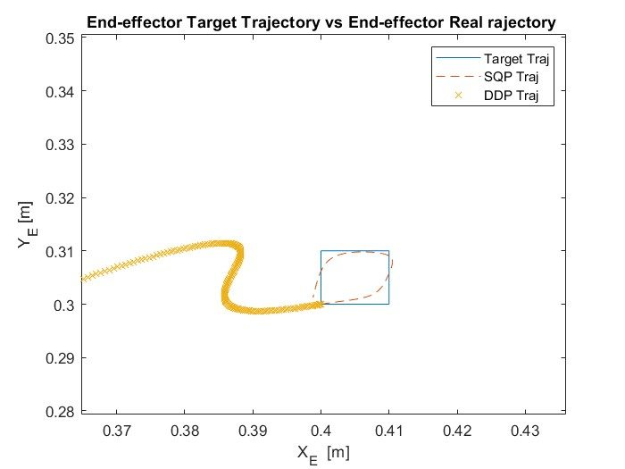
An MPC degrades as soon as the plant drifts from its model. I wrote the dynamics in regressor form and ran recursive least squares every timestep to update the parameters, feeding the new model back into the controller.
About 63% better tracking than the non-adaptive baseline0.92% final parameter error, in simulation
A two-person modelling project in MATLAB using linear graphs and state models. We modelled a solar-pumped system that stores water as head, runs it through a turbine and heats a tank.
The model showed it doesn't work: the tank empties in under ten minutes, and raising 28,000 litres by one degree would take about 32 hours. We reported that and proposed heating the water directly instead.
About two years in industry before my master's, both on heavy bulk material handling equipment.
Prince Rupert, BC
Sep 2024 to Mar 2025
Mechanical Engineering Co-op
Ahmedabad, India
2021 to 2022
Apprentice Engineer, Engineering Application Department
Victoria, BC
Four terms
Teaching Assistant, Mechanical Engineering
I got into robots through ROBOCON at L.D. College of Engineering in Ahmedabad. Three seasons of building machines to a deadline, and watching them break, taught me most of what I know about making things work. I came to Canada for my master's, where the work moved from building machines to the math of how they should move.
Outside engineering I teach kids STEAM at Steamoji in Richmond, and I'm curious about how businesses and markets work. If you're in robotics in Vancouver, I'm always glad to meet for a coffee.
If you're hiring for robotics, controls or mechanical design, or you just want to talk about robots, email is the quickest way to reach me.